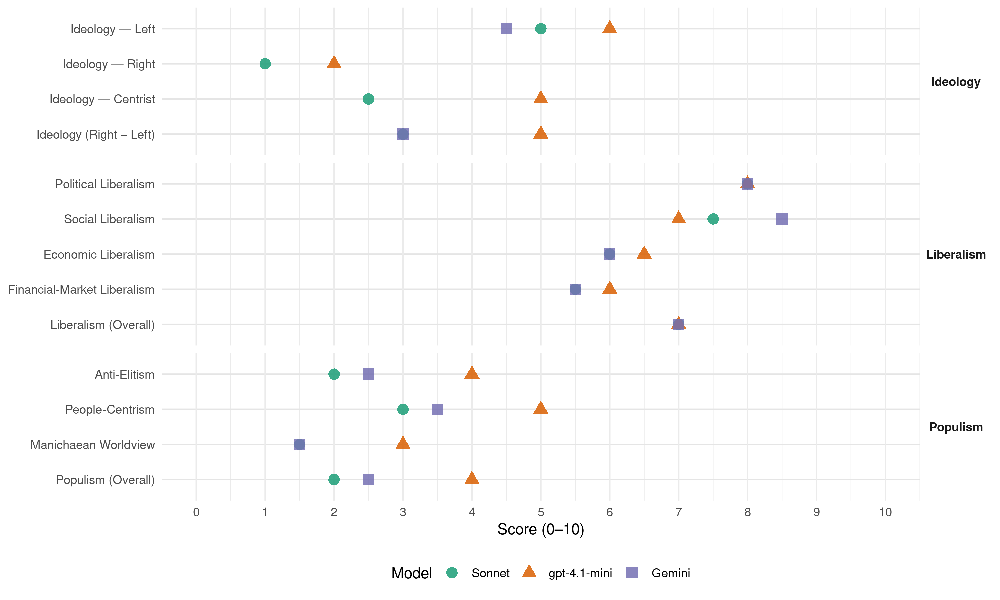

PSI (Italy, 1983)
manifesto_id 32320_198306
Get full text: This site shows derived annotations and short verbatim quotes only. The full manifesto text is © Manifesto Project / WZB — obtain it via manifesto-project.wzb.eu using the manifesto_id above.
Headline scores
| Dimension | Sonnet | gpt-4.1-mini | Gemini |
|---|---|---|---|
| Populism (Overall) | 2.0 | 4.0 | 2.5 |
| Anti-Elitism | 2.0 | 4.0 | 2.5 |
| People-Centrism | 3.0 | 5.0 | 3.5 |
| Manichaean Worldview | 1.5 | 3.0 | 1.5 |
| Ideology (Right − Left) | 3.0 | 5.0 | 3.0 |
| Liberalism (Overall) | 7.0 | 7.0 | 7.0 |
| Political Liberalism | 8.0 | 8.0 | 8.0 |
| Social Liberalism | 7.5 | 7.0 | 8.5 |
| Economic Liberalism | 6.0 | 6.5 | 6.0 |
| Financial-Market Liberalism | 5.5 | 6.0 | 5.5 |
Evidence per dimension
Economic Liberalism
Gemini · score 7.0 · verified · chunk 1
“privatizzazione delle attività che non vi rientrano”
la ridefinizione e il ridimensionamento del campo dell’impresa pubblica, e la privatizzazione delle attività che non vi rientrano. - il risanamento economico della gestione dei settori
Gemini · score 5.0 · verified · chunk 2
“titolari delle imprese o delle azioni”
la puntuale individuazione degli effettivi titolari delle imprese o delle azioni o quote sociali per le imprese aggiudicatarie
gpt-4.1-mini · score 7.0 · verified · chunk 1
“riduzione del costo del denaro, l’incentivazione al risparmio”
Il finanziamento dello sviluppo produttivo dovrà avvenire attraverso la riduzione del costo del denaro, l’incentivazione al risparmio ed al suo impiego per usi produttivi, la finalizzazione a tale obiettivo della politica di bilancio.
gpt-4.1-mini · score 6.0 · verified · chunk 2
“la cooperazione internazionale appare largamente insufficiente ed incapace di affrontare la gravita della situazione”
La grave crisi economica internazionale aggrava il divario tra Nord e Sud, crea enormi problemi ai paesi in via di sviluppo, costringe in condizioni di disperazione i paesi poveri e poverissimi del Terzo e del Quarto Mondo. La cooperazione internazionale appare largamente insufficiente ed incapace di affrontare la gravita della situazione. Occorre in primo luogo una strategia globale volta ad assicurare ai paesi poveri i rifornimenti energetici.
Sonnet · score 6.0 · verified · chunk 1
“privatizzazione delle attività che non vi rientrano”
la ridefinizione e il ridimensionamento del campo dell’impresa pubblica, e la privatizzazione delle attività che non vi rientrano
Sonnet · score 6.0 · verified · chunk 2
“regole commerciali più equilibrate per favorire le esportazioni”
Occorrono regole commerciali più equilibrate per favorire le esportazioni dei paesi in via di sviluppo. È necessario il reperimento di nuove risorse
Financial-Market Liberalism
Gemini · score 6.0 · verified · chunk 1
“riduzione del costo del denaro e di incentivazione del risparmio”
Esistono, quindi, ad avviso del Partito Socialista, le esigenze e le condizioni per una politica di riduzione del costo del denaro e di incentivazione del risparmio. Tale politica si deve concretare attraverso
Gemini · score 5.0 · verified · chunk 2
“impegno di tutte le istituzioni: polizia, magistratura, uffici del lavoro, camere di commercio, banche”
ricevere un impulso particolare attraverso l’impegno di tutte le istituzioni: polizia, magistratura, uffici del lavoro, camere di commercio, banche. In particolare si tratta di portare a termine
gpt-4.1-mini · score 6.0 · verified · chunk 1
“riduzione dei tassi di interesse realmente pagati dalla clientela alle banche”
Tale politica si deve concretare attraverso: una sostanziale riduzione dei tassi di interesse realmente pagati dalla clientela alle banche; una maggiorazione della remunerazione per i piccoli e medi portatori dei libretti di risparmio vincolati.
Sonnet · score 6.0 · verified · chunk 1
“riduzione del costo del denaro”
Una manovra diretta alla riduzione del costo del denaro ed alla incentivazione del risparmio
Sonnet · score 5.0 · verified · chunk 2
“intervento in campo monetario e della finanza internazionale”
Un intervento in campo monetario e della finanza internazionale per rafforzare la politica degli aiuti e per ridurre il peso paralizzante dei debiti.
Political Liberalism
Gemini · score 8.0 · verified · chunk 1
“una maggiore eguaglianza e da una più intensa partecipazione democratica”
progresso caratterizzata da uno sviluppo più qualitativo e da una base più ampia di consenso, caratterizzata da una maggiore eguaglianza e da una più intensa partecipazione democratica. Il costo della repressione monetaristica si misura con
Gemini · score 8.0 · verified · chunk 2
“diritti della difesa e del contraddittorio”
correttezza delle indagini giudiziarie, la lealtà nel processo e i diritti della difesa e del contraddittorio.
gpt-4.1-mini · score 8.0 · verified · chunk 1
“democrazia, più moralità, più stabilità, più capacità di decidere”
Una società che aspira ad essere più moderna e più giusta ha bisogno di profonde novità nell’assetto e nella vita delle istituzioni. Alle sedi politiche essa chiede una migliore rappresentanza, ma anche più moralità, più stabilità, più capacità di decidere sulla base di scelte coerenti.
gpt-4.1-mini · score 8.0 · verified · chunk 2
“la Costituzione affida per la massima parte l’assolvimento di questo compito essenziale dello Stato”
Base di un retto funzionamento della giustizia è la magistratura ordinaria a cui la Costituzione affida per la massima parte l’assolvimento di questo compito essenziale dello Stato. La magistratura italiana, pur avendo conseguito il massimo di indipendenza, non ha potuto viceversa raggiungere sempre quella elevata professionalità e quell’equilibrio, che potranno essere entrambi conseguiti solo se andranno in porto e saranno seguite da effettiva attuazione quelle riforme che sono state già da tempo sollecitate e che il nuovo Parlamento dovrà finalmente prendere in esame.
Sonnet · score 8.0 · verified · chunk 1
“più intensa partecipazione democratica”
da una maggiore eguaglianza e da una più intensa partecipazione democratica
Sonnet · score 8.0 · verified · chunk 2
“meglio garantire le libertà personali, l’onore e la riservatezza dei cittadini”
rivolto ad eliminare alcuni momenti della legislazione dell’emergenza che possono considerarsi superati e a meglio garantire le libertà personali, l’onore e la riservatezza dei cittadini, nonché la correttezza delle indagini giudiziarie
Liberalism (Overall)
Gemini · score 7.0 · verified · chunk 1
“privatizzazione delle attività che non vi rientrano”
la ridefinizione e il ridimensionamento del campo dell’impresa pubblica, e la privatizzazione delle attività che non vi rientrano. - il risanamento economico della gestione dei settori
Gemini · score 7.0 · verified · chunk 2
“difesa dei diritti umani”
La difesa dei diritti umani rappresenta uno dei fondamentali doveri politici e civili
gpt-4.1-mini · score 7.0 · verified · chunk 1
“riduzione del costo del denaro, l’incentivazione al risparmio”
Il finanziamento dello sviluppo produttivo dovrà avvenire attraverso la riduzione del costo del denaro, l’incentivazione al risparmio ed al suo impiego per usi produttivi, la finalizzazione a tale obiettivo della politica di bilancio.
gpt-4.1-mini · score 7.0 · verified · chunk 2
“la Costituzione affida per la massima parte l’assolvimento di questo compito essenziale dello Stato”
Base di un retto funzionamento della giustizia è la magistratura ordinaria a cui la Costituzione affida per la massima parte l’assolvimento di questo compito essenziale dello Stato. La magistratura italiana, pur avendo conseguito il massimo di indipendenza, non ha potuto viceversa raggiungere sempre quella elevata professionalità e quell’equilibrio, che potranno essere entrambi conseguiti solo se andranno in porto e saranno seguite da effettiva attuazione quelle riforme che sono state già da tempo sollecitate e che il nuovo Parlamento dovrà finalmente prendere in esame.
Sonnet · score 7.0 · verified · chunk 1
“più intensa partecipazione democratica”
da una maggiore eguaglianza e da una più intensa partecipazione democratica
Sonnet · score 7.0 · verified · chunk 2
“meglio garantire le libertà personali, l’onore e la riservatezza dei cittadini”
rivolto ad eliminare alcuni momenti della legislazione dell’emergenza che possono considerarsi superati e a meglio garantire le libertà personali, l’onore e la riservatezza dei cittadini
Anti-Elitism
Gemini · score 3.0 · verified · chunk 1
“collocamento e formazione sono istituti burocratici inquinati dal più sfacciato clientelismo”
Le istituzioni che dovrebbero promuovere l’adattamento reciproco e l’incontro tra domanda e offerta di lavoro si trovano in condizioni di disperata inefficienza. Collocamento e formazione sono istituti burocratici inquinati dal più sfacciato clientelismo. Il livello dell’informazione sulle possibilità di lavoro
Gemini · score 2.0 · verified · chunk 2
“centri di potere occulto”
mafioso, delle loro tecniche di azione e dei loro centri di potere occulto, e la conseguente applicazione delle sanzioni
gpt-4.1-mini · score 4.0 · verified · chunk 1
“le tenaci resistenze di gruppi interessati, che si sono avvalsi di solide protezioni politiche”
nell’ambito di una pressione fiscale inalterata - l’azione di equa redistribuzione del carico tributario, avviata con successo: malgrado le tenaci resistenze di gruppi interessati, che si sono avvalsi di solide protezioni politiche.
Sonnet · score 3.0 · verified · chunk 1
“tenaci resistenze di gruppi interessati”
malgrado le tenaci resistenze di gruppi interessati, che si sono avvalsi di solide protezioni politiche
Sonnet · score 1.0 · verified · chunk 2
“la violenza di alcuni sovrasta l’autorità dello Stato”
genera contatti delittuosi nel momento della ripresa della vita libera. La violenza di alcuni sovrasta l’autorità dello Stato, crea paura e sottomissione nei meno forti
Ideology — Centrist
gpt-4.1-mini · score 5.0 · verified · chunk 1
“consenso dei cittadini”
una politica di vero rigore e di equità basata sul consenso dei cittadini. Uscire dalla crisi richiede quindi stabilità politica e scelte precise e decise.
Sonnet · score 3.0 · verified · chunk 1
“rigore, equità, sviluppo”
RIGORE, EQUITÀ, SVILUPPO: IL SENSO DELLA PROPOSTA SOCIALISTA
Sonnet · score 2.0 · verified · chunk 2
“Pace, sicurezza, indipendenza resta la linea di fondo”
Pace, sicurezza, indipendenza resta la linea di fondo che ispirerà l’azione dei socialisti.
Ideology — Left
Gemini · score 6.0 · verified · chunk 1
“riducendo le disuguaglianze che incrinano la solidarietà della nazione”
Ma la disciplina necessaria per applicarle richiede un consenso che solo una politica di equità può produrre, riducendo le disuguaglianze che incrinano la solidarietà della nazione. Ed ambedue gli obiettivi, di rigore e di equità
Gemini · score 3.0 · verified · chunk 2
“lotta alle disuguaglianze nel mondo”
propensioni più pericolose. L’accentuata divisione tra paesi ricchi e paesi poveri, i profondi squilibri tra i livelli di sviluppo, di ricchezza, di condizioni di vita accrescono la instabilità e le tensioni. La lotta alle disuguaglianze nel mondo rappresenta uno degli aspetti essenziali
gpt-4.1-mini · score 6.0 · verified · chunk 1
“azione di equa redistribuzione del carico tributario”
nell’ambito di una pressione fiscale inalterata - l’azione di equa redistribuzione del carico tributario, avviata con successo: malgrado le tenaci resistenze di gruppi interessati, che si sono avvalsi di solide protezioni politiche.
Sonnet · score 6.0 · verified · chunk 1
“equa redistribuzione del carico tributario”
dovrà essere proseguita - nell’ambito di una pressione fiscale inalterata - l’azione di equa redistribuzione del carico tributario
Sonnet · score 4.0 · verified · chunk 2
“lotta alle disuguaglianze nel mondo rappresenta uno degli aspetti essenziali”
L’accentuata divisione tra paesi ricchi e paesi poveri, i profondi squilibri tra i livelli di sviluppo, di ricchezza, di condizioni di vita accrescono la instabilità e le tensioni. La lotta alle disuguaglianze nel mondo rappresenta uno degli aspetti essenziali della organizzazione della pace.
Ideology (Right − Left)
Gemini · score 4.0 · verified · chunk 1
“riducendo le disuguaglianze che incrinano la solidarietà della nazione”
Ma la disciplina necessaria per applicarle richiede un consenso che solo una politica di equità può produrre, riducendo le disuguaglianze che incrinano la solidarietà della nazione. Ed ambedue gli obiettivi, di rigore e di equità
Gemini · score 2.0 · verified · chunk 2
“lotta alle disuguaglianze nel mondo”
propensioni più pericolose. L’accentuata divisione tra paesi ricchi e paesi poveri, i profondi squilibri tra i livelli di sviluppo, di ricchezza, di condizioni di vita accrescono la instabilità e le tensioni. La lotta alle disuguaglianze nel mondo rappresenta uno degli aspetti essenziali
gpt-4.1-mini · score 5.0 · verified · chunk 1
“azione di equa redistribuzione del carico tributario”
nell’ambito di una pressione fiscale inalterata - l’azione di equa redistribuzione del carico tributario, avviata con successo: malgrado le tenaci resistenze di gruppi interessati, che si sono avvalsi di solide protezioni politiche.
Sonnet · score 4.0 · verified · chunk 1
“equa redistribuzione del carico tributario”
dovrà essere proseguita - nell’ambito di una pressione fiscale inalterata - l’azione di equa redistribuzione del carico tributario
Sonnet · score 2.0 · verified · chunk 2
“lotta alle disuguaglianze nel mondo rappresenta uno degli aspetti essenziali”
La lotta alle disuguaglianze nel mondo rappresenta uno degli aspetti essenziali della organizzazione della pace.
Ideology — Right
gpt-4.1-mini · score 2.0 · verified · chunk 1
“rafforzare il ruolo dell’Europa, come terzo grande polo del mondo industriale avanzato”
Un modo concreto per perseguire questa seconda strada è quello di rafforzare il ruolo dell’Europa, come terzo grande polo del mondo industriale avanzato, capace di bilanciare la forza degli altri due.
Sonnet · score 1.0 · verified · chunk 1
“cooperazione internazionale tra le grandi aree”
sulla via della cooperazione internazionale tra le grandi aree del mondo industriale
Sonnet · score 1.0 · verified · chunk 2
“nessuna interferenza che possa muovere attraverso le vie dello spionaggio”
Dall’Italia non potrà mai venire una minaccia verso i paesi dell’Europa Orientale, ma non sarà tollerata nessuna interferenza che possa muovere attraverso le vie dello spionaggio o peggio della connivenza con fenomeni terroristici.
Manichaean Worldview
Gemini · score 2.0 · verified · chunk 1
“malgrado le tenaci resistenze di gruppi interessati, che si sono avvalsi di solide protezioni politiche”
nell’ambito di una pressione fiscale inalterata - l’azione di equa redistribuzione del carico tributario, avviata con successo: malgrado le tenaci resistenze di gruppi interessati, che si sono avvalsi di solide protezioni politiche. A tal fine sarà continuata la politica di restituzione
Gemini · score 1.0 · verified · chunk 2
“contro ogni forma di oppressione, di barbarie”
forze della libertà, del progresso e della pace, contro ogni forma di oppressione, di barbarie, di abuso e di degenerazione del potere.
gpt-4.1-mini · score 3.0 · verified · chunk 1
“forze e governi di sinistra, ma anche le voci più ragionevoli nel campo moderato”
Non solo le forze e i governi di sinistra, ma anche le voci più ragionevoli nel campo moderato, insistono da tempo per invertire il segno delle politiche monetaristiche.
Sonnet · score 2.0 · verified · chunk 1
“forze conservatrici avanzano la richiesta”
Di fronte alla crisi dello Stato sociale le forze conservatrici avanzano la richiesta di un ritorno al passato
Sonnet · score 1.0 · verified · chunk 2
“Imperialismo e neocolonialismo provocano lacerazioni”
Nessuno deve aspirare ad avere, e a nessuno deve essere concessa, una posizione di supremazia militare. Imperialismo e neocolonialismo provocano lacerazioni che offendono il diritto dei popoli
People-Centrism
Gemini · score 4.0 · verified · chunk 1
“politica di vero rigore e di equità basata sul consenso dei cittadini”
cause strutturali e finanziarie attraverso una politica di vero rigore e di equità basata sul consenso dei cittadini. Uscire dalla crisi richiede quindi stabilità politica
Gemini · score 3.0 · verified · chunk 2
“schiacciante maggioranza del popolo italiano”
violenza politica da parte della schiacciante maggioranza del popolo italiano, debbono ora portare ad una organizzazione
gpt-4.1-mini · score 5.0 · verified · chunk 1
“consenso dei cittadini”
una politica di vero rigore e di equità basata sul consenso dei cittadini. Uscire dalla crisi richiede quindi stabilità politica e scelte precise e decise.
Sonnet · score 4.0 · verified · chunk 1
“consenso dei cittadini”
una politica di vero rigore e di equità basata sul consenso dei cittadini
Sonnet · score 2.0 · verified · chunk 2
“grazie al ripudio della violenza politica da parte della schiacciante maggioranza del popolo italiano”
I successi conseguiti negli ultimi anni grazie al sacrificio di molti valorosi servitori della collettività e grazie al ripudio della violenza politica da parte della schiacciante maggioranza del popolo italiano
Populism (Overall)
Gemini · score 3.0 · verified · chunk 1
“collocamento e formazione sono istituti burocratici inquinati dal più sfacciato clientelismo”
Le istituzioni che dovrebbero promuovere l’adattamento reciproco e l’incontro tra domanda e offerta di lavoro si trovano in condizioni di disperata inefficienza. Collocamento e formazione sono istituti burocratici inquinati dal più sfacciato clientelismo. Il livello dell’informazione sulle possibilità di lavoro
Gemini · score 2.0 · verified · chunk 2
“centri di potere occulto”
mafioso, delle loro tecniche di azione e dei loro centri di potere occulto, e la conseguente applicazione delle sanzioni
gpt-4.1-mini · score 4.0 · verified · chunk 1
“le tenaci resistenze di gruppi interessati, che si sono avvalsi di solide protezioni politiche”
nell’ambito di una pressione fiscale inalterata - l’azione di equa redistribuzione del carico tributario, avviata con successo: malgrado le tenaci resistenze di gruppi interessati, che si sono avvalsi di solide protezioni politiche.
Sonnet · score 3.0 · verified · chunk 1
“consenso dei cittadini”
una politica di vero rigore e di equità basata sul consenso dei cittadini
Sonnet · score 1.0 · verified · chunk 2
“grazie al ripudio della violenza politica da parte della schiacciante maggioranza del popolo italiano”
I successi conseguiti negli ultimi anni grazie al sacrificio di molti valorosi servitori della collettività e grazie al ripudio della violenza politica da parte della schiacciante maggioranza del popolo italiano
Social Liberalism